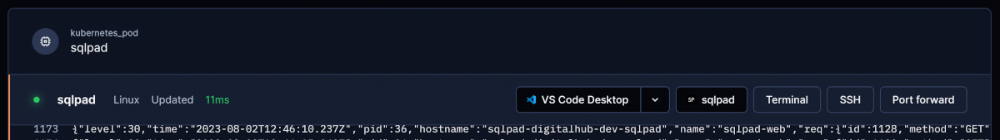

Workspaces
Workspaces in Coder contain dependencies and configuration required for applications to run.
We've already seen how to create a workspace from a template and how to access its applications once it's running, so let's take a look at how to access the workspace in a terminal.
The easiest and fastest way is to simply click on the Terminal button above the logs, which will open a terminal in your browser that allows you to browse the workspace's environment.

If you click on VS Code Desktop, it will open a connection to the workspace in your local instance of VSCode and you can open a terminal by clicking Terminal > New Terminal.
Access the workspace in a local terminal
You can also connect your local terminal to the workspace via SSH. If you click on SSH, it will show some commands you need to run in your terminal, but first you have to install the coder command and log into the Coder instance.
Install coder:
=== "Linux / macOS"
``` shell
curl -fsSL https://coder.com/install.sh | sh
```
=== "From binaries (Windows)"
Download the [release](https://github.com/coder/coder/releases) for your OS (for example: `coder_0.27.2_windows_amd64.zip`), unzip it and move the `coder` executable to a location that's on your `PATH`. If you need to know how to add a directory to `PATH`, follow [this](https://answers.microsoft.com/en-us/windows/forum/all/adding-path-variable/97300613-20cb-4d85-8d0e-cc9d3549ba23).
!!! info "Restart the command prompt"
If it is already running, you will need to restart the *Command Prompt* for this change to take into effect.
Log in:
coder login https://coder.my-digitalhub-instance.it
A tab will open in your browser, ask you to log-in if you haven't already, then display a token that you're supposed to copy and paste in the terminal.
Now you can run the two commands you saw when you clicked on SSH. Configure SSH hosts (confirm with yes when asked):
coder config-ssh
Note that, if you create new workspaces after running this command, you will need to re-run it to connect to them.
The sample command below displays how to connect to the Jupyter workspace and will differ depending on the workspace you want to connect to. Take the actual command from what you see when you click SSH on Coder.
ssh coder.jupyter.jupyter
Your terminal should now be connected to the workspace. When you want to terminate the connection, simply type exit. To log coder out, type coder logout.
Port-forwarding
Port-forwarding may be done on any port: there are no pre-configured ones and it will work as long as there is a service listening on that port. Ports may be forwarded to make a service public, or through a local session.
Public
This can be done from Coder, directly from the workspace's page. Click on Port forward, enter the port number and click Open URL. Users will have to log in to access the service.
Local
You can start a SSH port-forwarding session from your local terminal. First, log in:
coder login https://coder.my-digitalhub-instance.it
The format for the SSH port-forwarding command is:
ssh -L [localport]:localhost:[remoteport] coder.[workspace]
For example, it may be:
ssh -L 3000:localhost:3000 coder.jupyter.jupyter
You will now be able to access the service in your browser, at localhost:3000.
Resources
- Official documentation on installation
- Official documentation on Coder workspaces